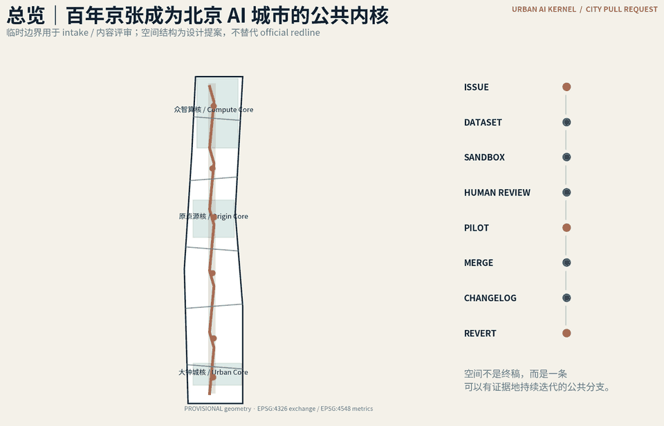
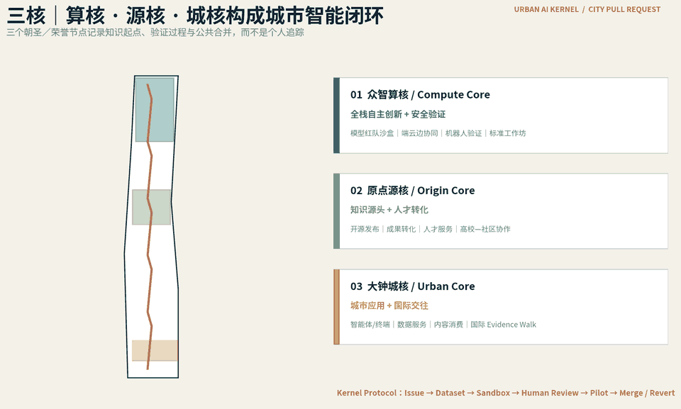
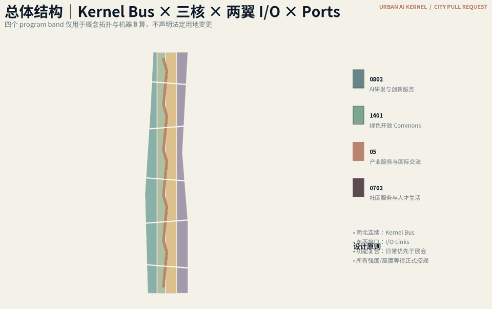
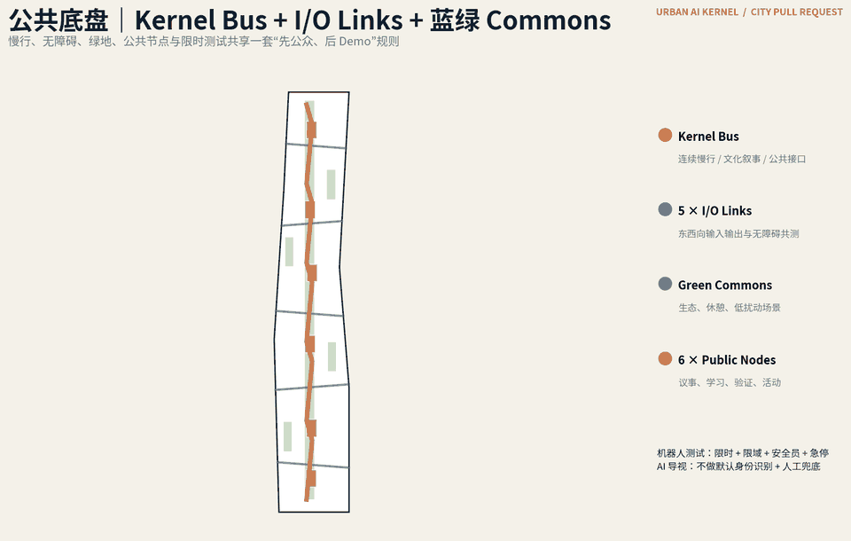
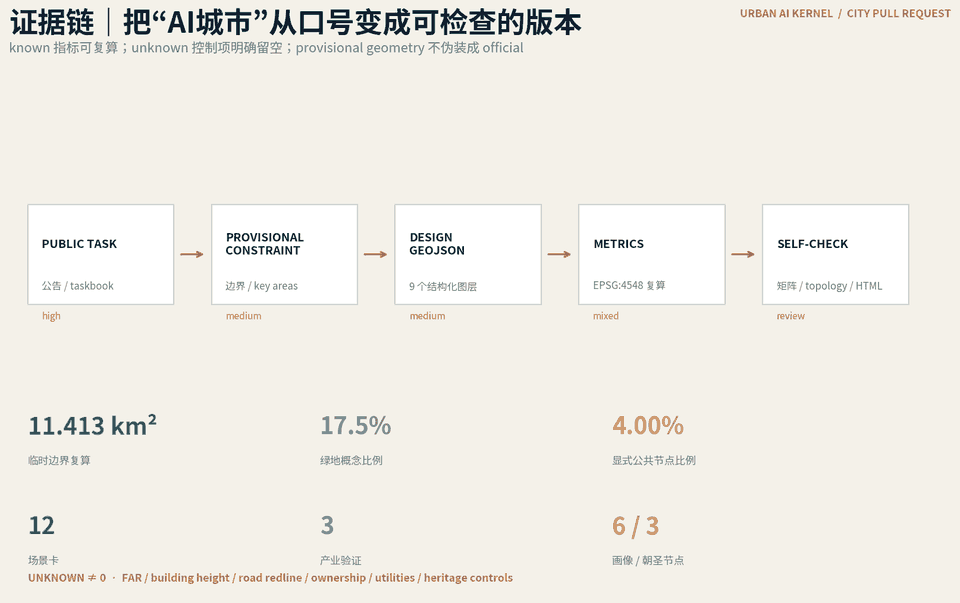

总览地图

三层范围
43.6 km² 统筹研究 → 11.4 km² 总体设计 → 三处重点区域。当前 polygon 为 provisional，内容评分可用但不得等同 official redline。
重点区域

用地分区

交通慢行｜Kernel Bus × I/O Links
Kernel Bus 沿京张南北连续，五条 I/O Links 把高校、园区、社区、轨道与公共生活接入城市级 AI 内核；机器人验证采用限时限域与人工安全员。
蓝绿公共空间
连续 Green Commons + 六个公共节点，优先服务日常休憩、无障碍、学习和社区议事。

建筑
仅提交十个可逆轻量 AI Commons 原型 footprint；不推断既有建筑拆改留，不虚构 FAR、高度或权属。
更新项目
JZ-01 Kernel Bus；JZ-02 Compute Yard；JZ-03 Origin Zero；JZ-04 Merge Bell；JZ-05 AI Commons Nodes；JZ-06 无障碍共测；JZ-07 Evidence Walk；JZ-08 City PR 治理。
AI 场景
核心指标

任务覆盖
公告 1.3 / 1.4 / 1.5 与 agent.1—agent.6 全部映射至 compliance_matrix；15 项设计深度映射至 design_depth_matrix。
自检状态
PASS for intake/content review with provisional geometry disclosure. 正式专业评分或法定用途前必须替换 official redline/key-area polygons，并重算全套 geometry/metrics。
来源
官方公告、organizer site package、agent taskbook、source registry；全球案例仅作机制背景研究，不作为场地控制条件。
假设
缺少 official redline、部分控规、道路、市政、权属、消防、文保与既有建筑精确资料；所有相关结论保持 pending professional confirmation。